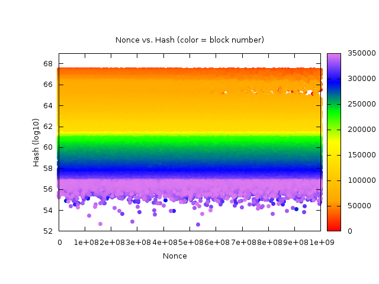
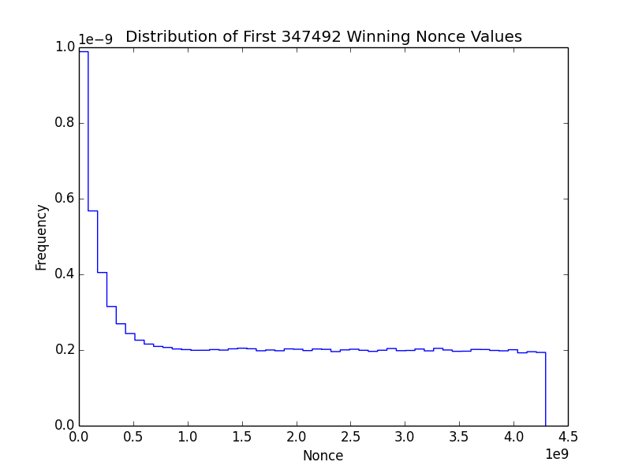
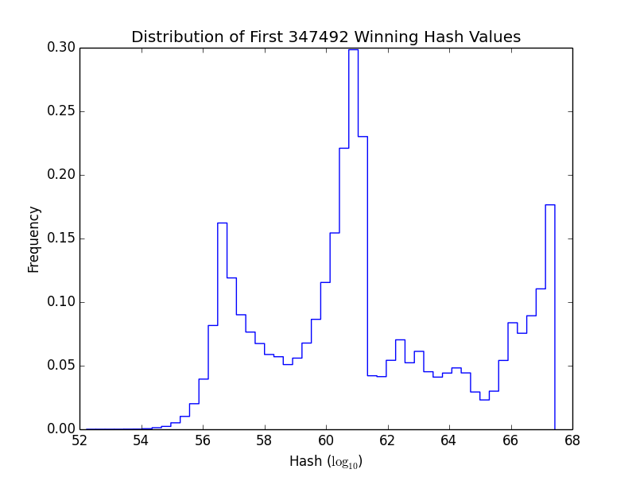
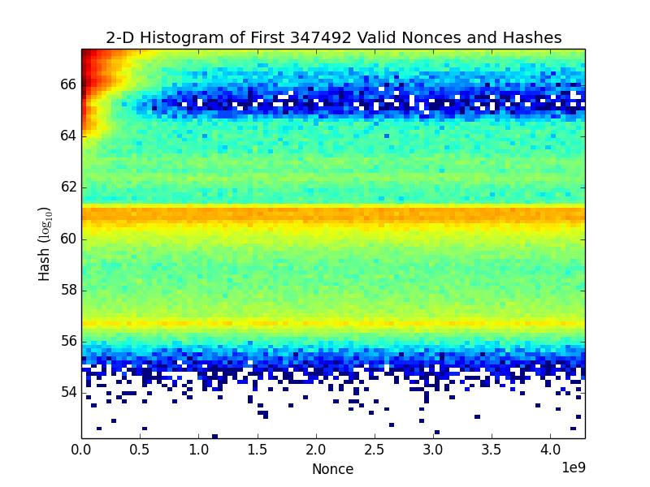

Here we analyze the nonce values and hashes for all the valid blocks in the blockchain: (1.1)
Time Evolution
Nonces vs Hashes (y-axis logarithmic, x-axis linear)
This plot readily shows that the distribution of nonces that produce valid hashes is uniform.

{kind=link}
Nonces vs Hashes (log-log scale)
.png){kind=link}
In the animated version of this last plot, (4.1) you can really visualize the change in the difficulty and even see where the difficulty was decreased.
Histograms
Distribution of Nonces
The nonces found are skewed toward 0 because this is a selection effect: most everyone starts searching for nonces starting at 0, so the lower nonces are found first, even though there may be also higher nonces that could produce a winning block:

{kind=link}
Distribution of Hashes
Although the distribution of hashes is not uniform, this does not matter; all that matters is that the distribution of nonces is uniform (which they are, minus the selection effect of starting at 0):

{kind=link}
2-D Distribution of Nonces & Hashes
2-D histogram of hashes and nonces (logarithmic color scale):

This also illustrates very well that the distribution of nonces is uniform.
.png){kind=link}
References
1.1: https://bitcoin.stackexchange.com/q/36414/4334
4.1: animated version (cumulative) cf. or
{kind=link}